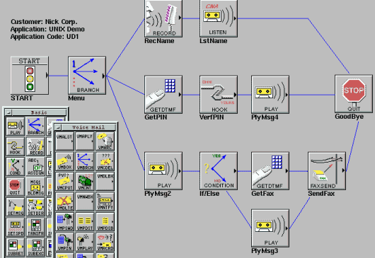

Visual Programming Languages (VPL)
Visual Programming Languages allow developers to create programs using a Graphical User Interface (GUI) instead of writing text-based code.

Programs are built by:
- Dragging and dropping blocks
- Using icons, menus, and visual elements
Advantages of Visual Programming
- Easier for beginners
- Reduces syntax errors
- Faster development for simple applications
- Useful in education and prototyping
Visual programming environments often include IDEs (Integrated Development Environments) that provide:

- Code editors
- Compilers or interpreters
- Debugging tools
- Automation features
Examples of Visual Programming Languages
- Scratch
- Blockly
- LabVIEW
- Visual Basic (hybrid: visual and text-based)